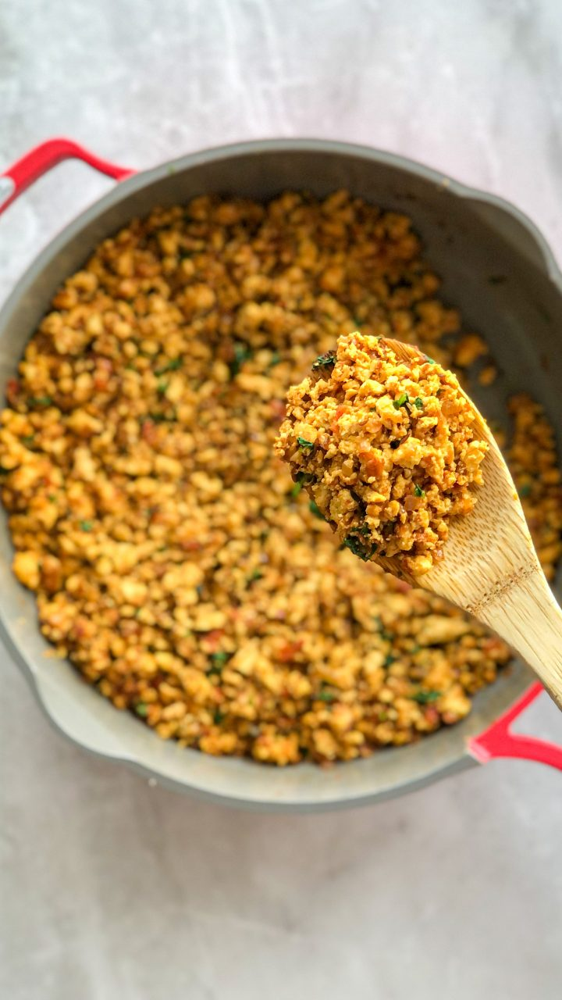

Masala Egg Bhurji

Prep time: 5 mins Cook time: 10 mins Serves: 1-2
Ingredients
- 3-4 eggs
- 1 onion, finely chopped
- 1 tomato, finely chopped
- 1 green chili, chopped
- 1 tsp turmeric powder
- 1 tsp red chili powder
- 1 tsp garam masala
- 1 tbsp oil or butter
- 1 tsp Chicken Masala (Trust me)
- Coriander leaves, chopped
- Salt and pepper as needed
Steps
- Heat oil in a pan and put the chopped onions until golden brown.
- Add tomato and green chili, cook until soft.
- Add turmeric, chili powder, Chicken masala and salt, mix well.
- Crack the eggs directly into the pan and scramble continuously.
- Sprinkle garam masala and coriander at the end.
- Serve with roti or bread (GOAT Recipe)
Backstory: My Original Recipe, I just tried random spices. It turned out Great. (Original recipe by Chef Bishesh.)